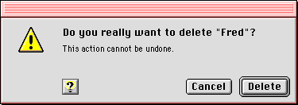
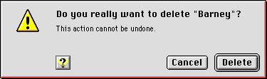

Alert Boxes
Alert boxes are special types of modal dialog boxes. Alert boxes display messages to users to inform them of situations that may be particularly notable or dangerous, along with an icon that signifies the degree of severity of the alert message.An alert box contains only an icon, text, and buttons; there are no other controls. The only way to close an alert box is to click a button. This is deliberate, as alert boxes are only used to signify conditions which demand an explicit response from the user.
An alert box may contain up to four buttons:
If you use the standard alert boxes provided by the Mac OS Toolbox, the size of the alert box is automatically set for you based on the amount of text it contains. The icon, text, and buttons of a standard alert box are automatically positioned.
- OK
- Cancel
- Help
- an optional button (Don't Save, for example)
Alert boxes feature two distinct styles of text display. The box's label appears in the boldfaced version of the system font, while the narrative below it appears in the plain text version of the small system font. This distinction is handled automatically for you when you specify an alert box through the Mac OS Toolbox. You should use the label to provide a short, simple summary of the error or condition which summoned the alert. The narrative section allows you to provide a longer, more detailed description of the situation and its consequences.
A movable alert box has red highlights on its title bar, which distinguish it from a movable modal dialog box. As with dialog boxes, you should use a movable alert box whenever possible. Figure 3-4 shows a movable alert box.
Figure 3-4 A movable alert box

Alert boxes which are not movable are sometimes called "modal alert boxes," but this is somewhat misleading, as all alert boxes are modal by definition. A non-movable alert box has a red border around the placard which forms the content region. This reflects the significance of the content and helps to distinguish the alert box from a standard modal dialog box. Figure 3-5 shows a non-movable alert box.

See "Language" in Macintosh Human Interface Guidelines for more information on writing appropriate alert box messages.
Subtopics
- Note Alert Boxes
- Caution Alert Boxes
- Stop Alert Boxes